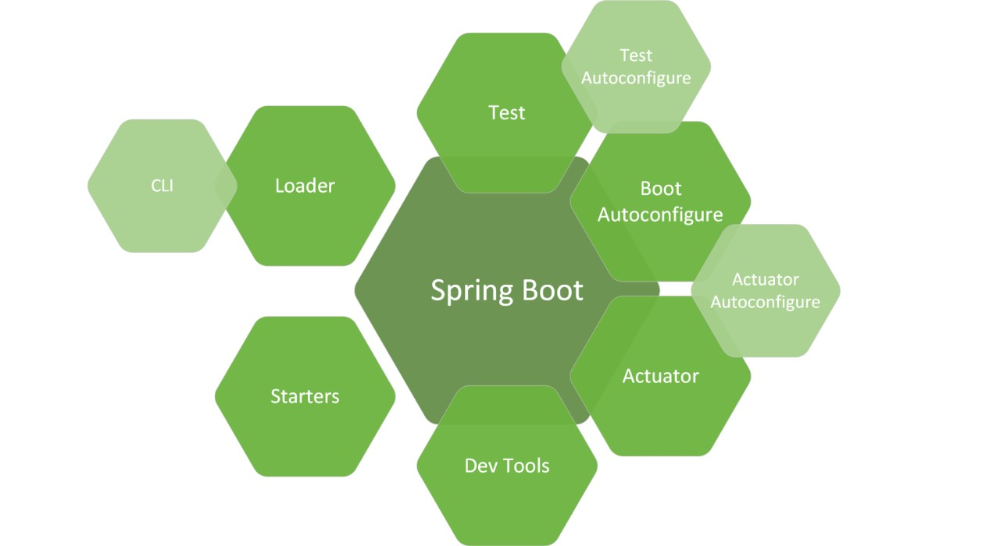
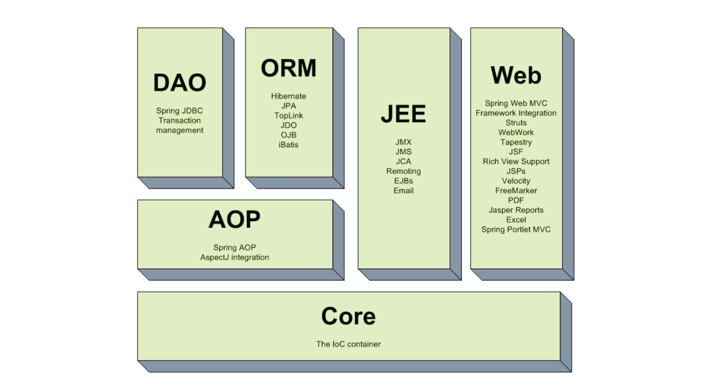

Unveiling the Depths of Spring Framework: A Deep Dive into Tuning
Introduction:
In the ever-evolving landscape of Java development, the Spring Framework
stands as a cornerstone, providing a robust foundation for building
scalable and maintainable applications. However, to truly harness its
power, developers must venture into the realm of tuning – a process that
unveils the intricate workings of the framework and allows for optimal
performance. In this blog post, we embark on a journey into the depths
of the Spring Framework, exploring key tuning strategies to enhance your
application's efficiency.
Understanding the Spring Framework:
Spring is renowned for its flexibility and modularity, but fine-tuning
is essential for unlocking its full potential. One crucial aspect is
understanding the IoC (Inversion of Control) container, which manages
the application's components. By scrutinizing bean lifecycles and
dependencies, developers can eliminate inefficiencies and streamline
their applications.
Memory Management:
Efficient memory utilization is paramount for application performance.
Spring applications often rely on the Garbage Collector (GC), and
developers should delve into tuning GC parameters to strike a balance
between memory allocation and collection. This ensures that the
application runs smoothly without succumbing to memory-related issues.
Database Interaction:
Spring Framework seamlessly integrates with databases, but tuning
database connections is pivotal for optimizing performance. Fine-tuning
connection pools, adjusting fetch sizes, and optimizing queries can
significantly enhance database interactions, reducing latency and
improving overall responsiveness.
Optimize Spring's power: Dive deep into tuning. Master memory, database, and concurrency for peak performance in every application.

Thread Pool Configuration:
Concurrency is a key strength of the Spring Framework, and tuning thread
pool configurations is essential for maximizing parallel processing.
Developers should carefully adjust thread pool sizes, queue capacities,
and timeouts to achieve optimal resource utilization and responsiveness.
Caching Strategies:
Spring provides robust caching mechanisms that can be fine-tuned to
boost performance. By strategically caching frequently accessed data,
developers can minimize the load on backend systems and accelerate
response times.
Monitoring and Profiling:
To effectively tune a Spring application, developers must employ
monitoring and profiling tools. These tools shed light on performance
bottlenecks, allowing for data-driven decision-making in the tuning
process. Popular tools like JVisualVM and YourKit can provide valuable
insights into memory usage, CPU profiling, and more.
Conclusion:
In the intricate tapestry of Spring Framework development, tuning is the
key to unlocking unparalleled performance. By delving into the nuances
of IoC containers, memory management, database interactions, thread
pools, caching, and employing monitoring tools, developers can ensure
their Spring applications operate at peak efficiency. This deep dive
into tuning is not just a technical endeavor but a strategic investment
in the longevity and success of your Spring-powered applications.